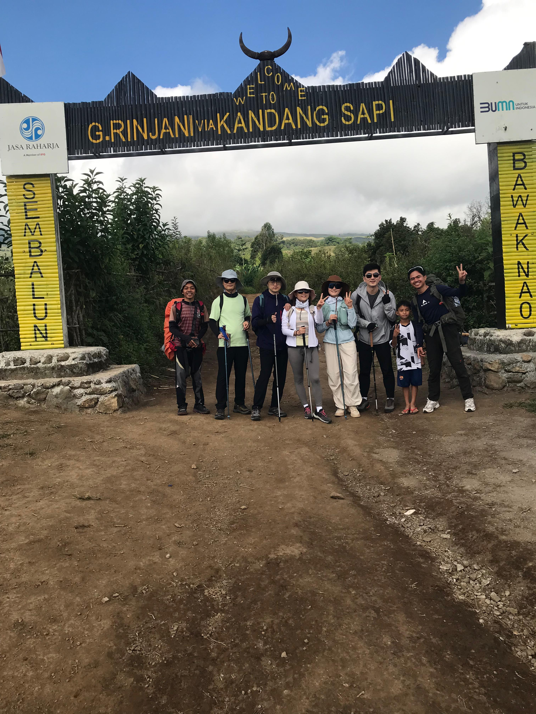

Ultimate Preparation Guide for Mount Rinjani
Mount Rinjani is the second highest volcano in Indonesia, and reaching its summit is a physically demanding yet incredibly rewarding experience. Proper preparation is the key to enjoying your trek.
Physical Fitness
We recommend starting cardiovascular exercises (like running, swimming, or cycling) at least one month prior to your hike. Leg strength is crucial, so incorporating stair climbing and squats into your routine will make the steep ascents and descents much more manageable.
Mental Readiness
The summit push usually begins at 2:00 AM in the freezing cold and involves climbing up volcanic scree where for every two steps you take, you slide one step back. A strong mindset and sheer determination will get you to the top.
Packing Smart
With Rinjani Excellence, you don't need to worry about heavy gear. We provide premium tents, sleeping bags, and all meals. You only need to pack a daypack with personal essentials: warm layers (it gets to 0°C at the summit!), headlamp, sun protection, good hiking boots, and a camera to capture the majestic views.